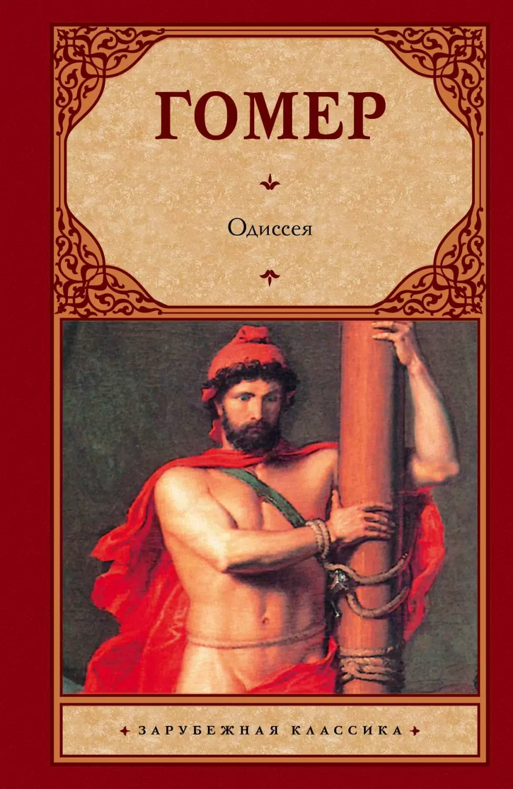
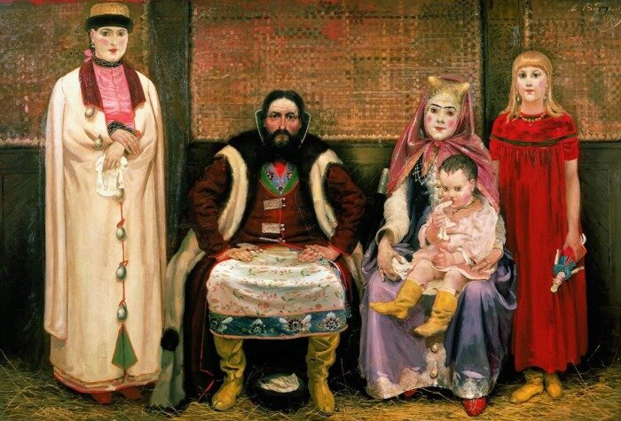
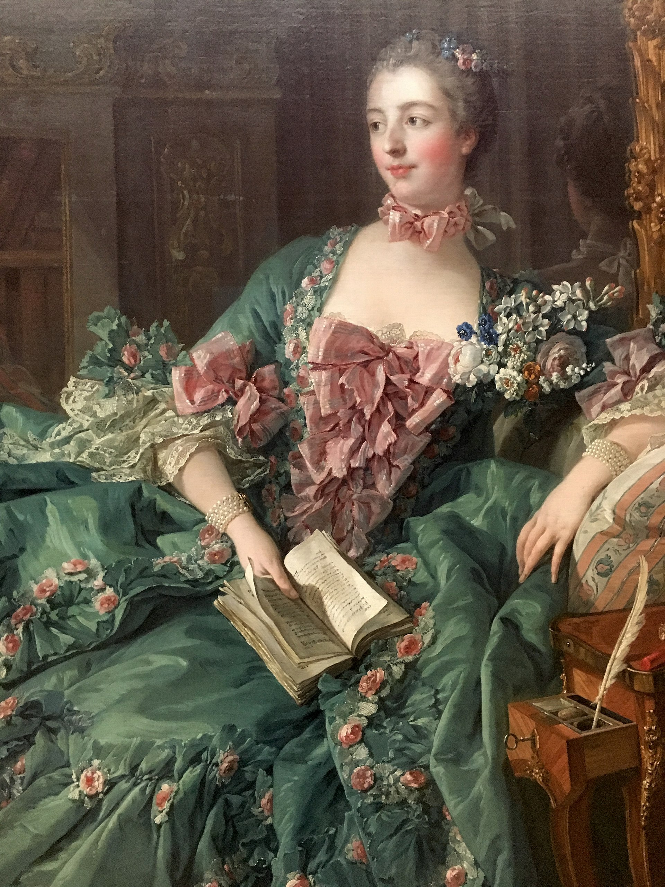

Розовый
— цвет, образующийся при смешивании красного и белого.
Хотя иногда его описывают как светло-красный, точнее будет сказать, что это ненасыщенный красный цвет, причём чаще всего с примесью пурпурного. Несмотря на широкое употребление слова, точный оттенок установить трудно; например, в английском языке используется два слова для существенно различных оттенков розового: Rose (более красный оттенок) и Pink («маргаритковый»).
Откуда произошло название цвета? И какова его история?
Розовый цвет был описан в литературе с древних времён. Гомер в своей «Одиссее» писал: «Перед восходом солнца на небе появляются расходящиеся из центра розовые полосы, которые напоминают растопыренные пальцы руки». Лукреций использовал это слово для описания рассвета в своей эпической поэме «О природе вещей».

«Одиссея» Гомера
Розовый не был обычным цветом в средневековой моде
Дворяне предпочитали более яркие красные цвета, например, малиновый. Тем не менее, в XIII и XIV веках в работах Чимабуэ и Дуччо ди Буонинсенья маленький Иисус Христос иногда изображался одетым в розовую одежду. Розовым цветом художники показывали духовную связь между матерью и ребёнком.

Картина дворян Андрей Рябушкина//Картина Иисуса из Армянской Апостольской Церкви
Популярность розового
Зенитом розового цвета был XVIII век, когда пастельные тона стали очень модными во всех дворах Европы. Особенно продвигала розовый цвет любовница французского короля Людовика XV маркиза де Помпадур (1721—1764), которая носила сочетания бледно-синего и розового цветов. Имя маркизы получил особый оттенок розового, сделанный для неё на Севрской фарфоровой фабрике, созданный добавлением синего, чёрного и жёлтого.

Маркиза де Помпадур
Что еще?
Кликните на картинку, чтобы посмотреть на современный вариант использования розового в сочетании с бирюзовым.